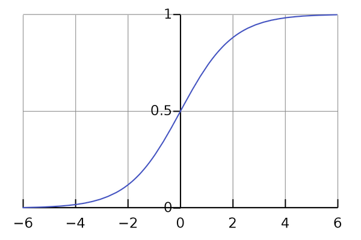

Sigmoid Neurons
Previously, we learnt about perceptrons and how they take binary inputs and produce a binary output.
Sigmoid neurons are almost identical to perceptrons. The only difference is that, sigmoids take any floating point number between 0 and 1 as inputs and outputs the same.
A sigmoid's input and output might look something like the above image. See that it is no longer constrained as binary but any floating point number between 0 and 1.
This tiny change results in some incredible behavioural upgrades to our Neural Network. We are no longer stuck with limited inputs and outputs. We can now fine tune our network to cause small changes in output in the event of small changes in inputs.
You might remember from our discussion of Perceptrons that the output is calculated with the expression:
We can make some notational changes to make it easier for us to write the weighted sum as a dot product:
where, w and x are vectors whose elements are weights and inputs respectively. w and x look like this:
x = [x1, x2 ... xj]
Their dot product will be:
which ultimately is our original weighted sum. Therefore:
Now, there is no gurantee that this output of a neuron will be a number between 0 and 1. To make sure that it is, we put the output in a special function called a sigmoid function. Hence, the name. The function looks like this:
All this function does is squeeze the output into a value between 0 and 1. The algebraic form a sigmoid function looks like this:
From the graph we can see that the output of the sigmoid function is always between 0 and 1. We can also see that for negative numbers the result tend to be closer to 0 and vise versa. Inputting 0 will always result in 0.5.
So if we put the output of our sigmoid neuron into the function, the output will be:
It means that, for any small changes in the weights (Δwj) and the bias (Δb) will result in a small change in the output (Δoutput). You can try to plug different values in the sigmoid function and observe the output using a calculator (or by hand if you're good at math). Now that we know about sigmoid neurons, we can move on to making our neural network that can recognize handwritten digits.